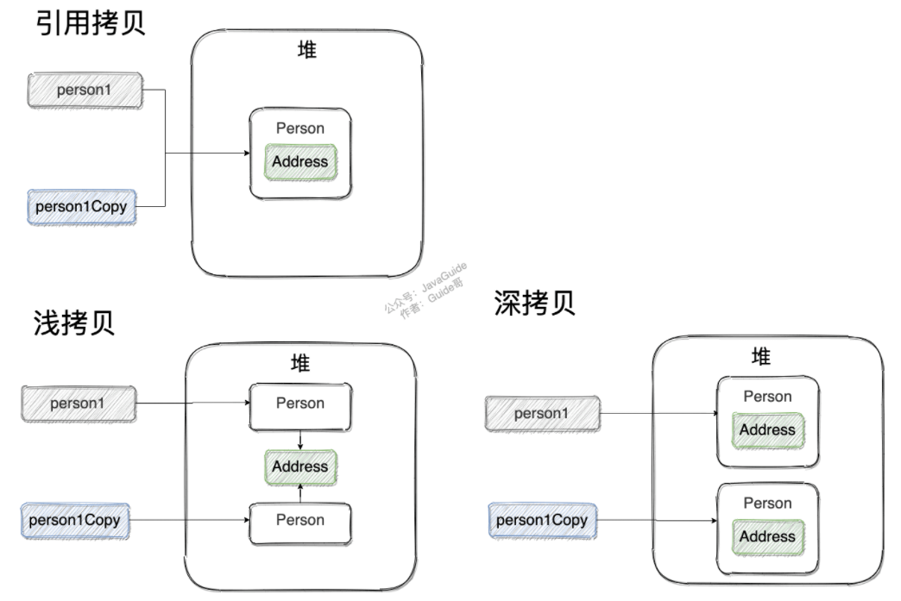
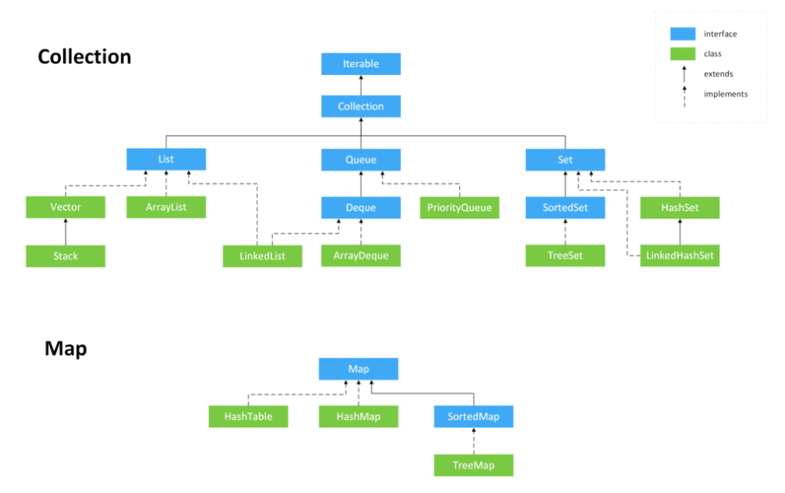
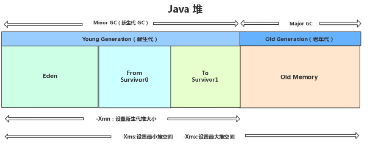
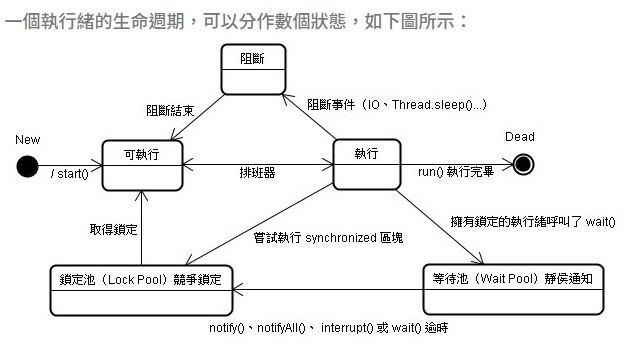
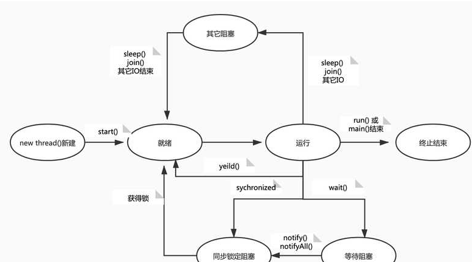

Java特性
- 純物件導向(Object-oriented programming，OOP)，任何行為是來自某個資料(物件)，目的是方便維護跟擴展性
- 跨平台(只要能跑JVM)、有GC
Java中的基本資料類型
| 基本類型 | 位元 | 位元組 | 預設值 |
|---|---|---|---|
| int | 32 | 4 | 0 |
| short | 16 | 2 | 0 |
| long | 64 | 8 | 0L |
| byte | 8 | 1 | 0 |
| char | 16 | 2 | ‘u0000’ |
| float | 32 | 4 | 0f |
| double | 64 | 8 | 0d |
| boolean | 1 | false |
- 這八種基本類型都有對應的包裝類分別為:
Byte、Short、Integer、Long、Float、Double、Character、Boolean - 包裝類型不賦值就是
Null，而基本類型有預設值且不是Null，所以通常在專案中設計entity都用包裝類，這樣從資料庫抓過來如果是空的不會自動變成0之類的引起麻煩 - 基本資料類型是存放在JVM棧中的區域變數表中(那些常用的早就準備好了)，而包裝類型屬於物件類型，我們知道物件實例都存在於堆中。相比於物件類型， 基本資料類型佔用的空間非常小
包裝類型的常量池技術？
- Java 基本類型的包裝類的大部分都實現了常量池技術
- Byte,Short,Integer,Long 這 4 種包裝類默認創建了數值 [-128，127] 的相應類型的緩存資料，Character 創建了數值在 [0,127] 範圍的緩存資料
- 就是因為有裝箱與常量池，所有整型包裝類物件之間值的比較，全部使用 equals 方法比較才不會踩坑
基本雜問
Java中只有值傳遞
- Java是
Pass by Value傳值，將參數值複製後傳遞 - 如果參數是基本類型的話，很簡單，傳遞的就是基本類型的字面量值的拷貝，會創建副本
- 如果參數是參考類型，傳遞的就是實參所引用的物件在堆中位址值的拷貝，同樣也會創建副本
throw與throws的區別?
- throws通常被應用在聲明方法時，表示我這個方法會拋啥異常，誰要調用方法時必須要拋出異常或者使用try-catch語句處理異常
- throw是在執行語句中，真的在這拋出一個異常
結束循環的區別
- continue: 指跳出當前的這一次迴圈，繼續下一次迴圈
- break: 指跳出整個循環體，繼續執行迴圈下的語句
- return: 用於跳出所在方法，結束該方法的運行
靜態方法為什麼不能調用非靜態成員?
- 靜態方法是屬於類的，在編譯完就被JVM的CLASSLOADER載入到記憶體的靜態方法區，是唯一且只有一個，不像非static是new的時候才被載入到heap
- 就程式底層來說，非靜態方法調用時是有傳入this指針；而調用靜態方法時，是沒有傳入this指針(因為只有那一個)，所以從根本上來說無法混用
Overload與Override
- Overload: 一個類中，同樣方法名但傳入的參數與返回值不同，發生在編譯期
- Override: 子類改寫父類的方法，方法名與傳入的參數必須相同，但返回值、拋異常、權限修飾可變且不能大於父類，發生在執行期
== 和 equals() 的區別
==對於基本類型和參考類型的作用效果是不同的- 對於基本資料型別來說，
==比較的是值 - 對於引用資料類型來說，
==比較的是物件的記憶體位址
- 對於基本資料型別來說，
- 因為 Java 只有值傳遞，所以對於
==來說，不管是比較基本資料型別，還是引用資料類型的變數，其本質比較的都是值，只是參考類型變數存的值是物件的位址 String的equals方法被重寫過，比較的是物件的值
為什麼重寫 equals() 時必須重寫 hashCode() 方法
-
hashCode()就像建立一個人的速寫，編成碼 -
因為兩個相等的物件的
hashCode值必須是相等。也就是說如果equals方法判斷兩個物件是相等的，那這兩個對象的hashCode值也要相等 -
如果重寫
equals()時沒有重寫hashCode()方法的話就可能會導致equals方法判斷是相等的兩個物件，hashCode值卻不相等，使用HashMap可能會出現兩個一樣的物件 -
兩個物件有相同的
hashCode值，他們也不一定是相等的（HASH碰撞）
建構子
-
建構子用來創建物件的實例，當沒有手動指定時，預設繼承他父類的建構子(但已經自動重寫了，會new出自己而非他的父類)，所以不寫也沒事
- 其實我們一直都在使用這個隱藏的特性，比如想創建某實例，使用
new()，就是在調用它隱形的、空參的建構子
- 其實我們一直都在使用這個隱藏的特性，比如想創建某實例，使用
-
所以如果重載了有參的構造方法，記得都要把無參的構造方法也寫出來（無論是否用到，比如有lombok可以加
@NoArgsConstructor），避免踩坑
物件導向三大特性
- 封裝Encapsulation : 不想被看到的就隱藏起來，只對外露出必要的部分(比如遙控器可以開電視，只會露出按鈕，不會露出電路板)，目的是為了安全性、減少耦合(Coupling)，封裝的修飾範圍有4種:
- private 該類別內部
- default(預設) 同package下類別
- protected 同package下及其子類別
- public 公開
- 繼承Inhertitance : 子類有來自父類的屬性與行為，為了方便復用、減少重複的程式碼
- 多型polymorphism : 同一個物件在不同狀況下有不同的行為表現，多型來自於繼承與方法的重寫(override)。即父類別提供的方法呼叫，子類別可以有自己特有的行為。簡單說就是編譯期看左邊、執行期看右邊
介面與抽象類
- 抽象類: 被繼承，以資料為主體
- 介面: 被實現，以方法為主體，實務上大多採用介面，因為介面可以實現多個，繼承只能一個
Copy 深拷貝

String
-
String 為什麼是不可變的?
- 因為保存字串的陣列被 final 修飾且為私有的，並且String 類沒有提供/暴露修改這個字串的方法
-
String、StringBuffer、StringBuilder 的區別？
String本身是final所以執行緒安全，StringBuffer有同步鎖也安全StringBuilder並沒有對方法進行加同步鎖，所以是非執行緒安全的，提升10%效能不划算
-
結論
-
操作少量的資料: 適用 String
-
單執行緒操作字串緩衝區下操作大量資料: 適用 StringBuilder
-
多執行緒操作字串緩衝區下操作大量資料: 適用 StringBuffer
-
-
物件引用和“+”的字串拼接方式，實際上是通過 StringBuilder 調用 append() 方法實現的，拼接完成之後調用 toString() 得到一個 String 物件
泛型（generics）
- 泛型的本質是參數化類型，也就是說所操作的資料類型被指定為一個參數
- 將型態由原來具體的型態參數化，類似於方法中的變數參數，此時型態也定義成形式參數，然後在使用/調用時傳入具體的型態（實際型態參數）
- Java 的泛型是偽泛型，這是因為 Java 在運行期間，所有的泛型資訊都會被擦掉，這也就是通常所說類型擦除
反射
- 框架的靈魂，從.Class反推，使我們可以在runtime分析類別、獲取類別中的方法或屬性
- 反射破壞封裝性? 嚴格來說是，但更大意義是了為了提供方便，就好像你沒帶鑰匙朝家裡吼一聲，家人聽到你的聲音也會來開門，既然是自家人也不會在意不用鑰匙破壞封裝性之類的問題(但是可能會被老媽念多大人了還老是忘東忘西)
- 實際使用還是要看如何寫的程式碼，比如spring的IOC，要為bean的私有成員注入值，spring容器要求你提供相應的getter、setter方法，而不是直接通過反射去操作你的私有成員
錯誤與異常
在 Java 中，所有的異常都有一個共同的祖先， java.lang 包中的 Throwable 類
- Exception :程式本身可以處理的異常，可以通過 catch 來進行捕獲
- Exception 又可以分為 Checked Exception (受檢查異常，必須處理) 和 Unchecked Exception (不受檢查異常，可以不處理)
- Error :Error 屬於程式無法處理的錯誤 ，我們沒辦法通過 catch 來進行捕獲 。例如Java 虛擬機器運行錯誤（Virtual MachineError）、虛擬機器記憶體不夠錯誤(OutOfMemoryError)、類定義錯誤（NoClassDefFoundError）等 。這些異常發生時，Java 虛擬機器（JVM）一般會選擇執行緒終止
IO
什麼是序列化
-
將記憶體中的某個東西轉換成二進位檔案，用以持久化保存、或進行網路間檔案傳輸
-
在Java中被序列化的都是一個具體的物件，如果物件中有不想被序列化的屬性可以用
transient修飾
bit流與byte流
- 實際上傳輸的東西最終都是bit流，但因為常遇到問題(比如傳很慢、被中斷、網路不穩遺失)，如果不知道編碼就會亂碼，所以有文字的部分用byte流
NIO
-
同步非阻塞，thread讀取IO(硬碟或網路資源)之前會發起select調用，core有準備好才會發起read調用，節省資源
-
https://github.com/Snailclimb/JavaGuide/blob/main/docs/java/basis/io.md
-
程首先發起 select 調用，詢問內核資料是否準備就緒，等內核把資料準備好了，使用者執行緒再發起 read 調用。read 調用的過程（資料從內核空間->用戶空間）還是阻塞的
-
Java 中的 NIO ，有一個非常重要的選擇器 ( Selector ) 的概念，也可以被稱為 多工器。通過它，只需要一個執行緒便可以管理多個用戶端連接。當用戶端資料到了之後，才會為其服務
集合
Collection 與 collections 的差異
-
Collection 是一個介面，繼承自iterable，下面包含List、Set、Queue三個子介面
-
Collections這種Xxxs通常是工具類，沒有實例，封裝了很多靜態方法，比如sort排序、reverse反轉、max找最大值等等

- List(對付順序的好幫手): 存儲的元素是有序的、可重複的
- Set(注重獨一無二的性質): 存儲的元素是無序的、不可重複的
- Queue(先進先出的管道): 按特定的排隊規則來確定先後順序，存儲的元素是有序的、可重複的
- Map(用 key 來搜索的專家): 使用鍵值對（key-value）存儲，key是無序、不可重複的；value 是無序的、可重複的，每個鍵最多映射到一個值。
List家族
-
ArrayList 是 List 的主要實現類，底層使用 Object 存儲，適用於頻繁的查找工作，執行緒不安全 ，然而有Collections工具類中的synchronizedList就能返回一個安全的
-
Vector 是 List 的古老實現類，底層使用Object 存儲，執行緒安全的，幾乎廢棄
-
LinkedList: 是雙向鏈表(每一節都包含前後兩個node的指向資訊)，適合頻繁插入刪除
Set家族
其實就是map的key那一半，實際開發很少用，通常只會用來去除重複之類的
Map家族
Map:由Set存成key(無序不可重複)，由Collection存成value(無序可重複)，key與value組合成無序不可重複的Entry或說Node結構HashMap的底層原理:16位長的數組，put元素時拿key跑hashCode()再位移運算得出要放的位置，若已經有東西，再比key的euqals()方法，若false表示哈希值恰好相同，在此處分支成鏈表結構儲存；若euqals()返回true表示key完全相等，則進行覆蓋的操作- Hashtable是執行緒安全，底層是synchronized的全表鎖
- ConcurrentHashMap 是分段鎖，效率比 Hashtable 高
無序性和不可重複性的含義是什麼
1、什麼是無序性？無序性不等於隨機性 ，無序性是指存儲的資料在底層陣列中並非按照陣列索引的順序添加 ，而是根據資料的雜湊值決定的。
2、什麼是不可重複性？不可重複性是指添加的元素按照 equals()判斷時 ，返回 false，需要同時重寫 equals()方法和 HashCode()方法。
MVC架構的優點與缺點
好維護、方便擴充，但分層多開發時間較長
-
視圖（View） — 介面設計人員進行圖形介面設計。View 負責顯示資料
-
控制器（Controller）- 負責轉發請求，對請求進行處理。Controller 負責處理訊息。
-
模型（Model） — 程式設計師編寫程式應有的功能（實現演算法等等）、資料庫專家進行資料管理和資料庫設計(可以實現具體的功能)。Model 負責資料存取。
http技術
sendRedirect跟forward
- forward是同一個請求可以用setAttribute傳遞參數，url不會變
- sendRedirect()是兩個請求，效率較低因為client又request一次
JVM GC

Minor GC只蒐集新生代垃圾，並且讓年齡+1，年齡超過15趕去老年代
誰是垃圾?
- 從GC Roots分析關聯性，沒人引用的就是垃圾
誰是GC Roots
- 虛擬機器棧(棧幀中的本地變數表)中引用的物件
- 本地方法棧(Native 方法)中引用的物件
- 方法區中類靜態屬性引用的物件
- 方法區中常量引用的物件
- 所有被同步鎖持有的物件
4種引用
- 強: 最常見
- 軟: 通常是cache，如果空間還夠就留下
- 弱: 相當於要丟了，只是優先級比較低
- 幽靈: 等於沒引用，只負責被GC時傳達一個訊號
三種清理法
- 戳戳樂
- 搬新家
- 環境整理
執行緒

-
新建狀態（New）:當執行緒物件對建立後，即進入了新建狀態，如:Thread t = new MyThread();
-
就緒狀態（Runnable）:當呼叫執行緒物件的start()方法（t.start();），執行緒即進入就緒狀態。處於就緒狀態的執行緒，只是說明此執行緒已經做好了準備，隨時等待CPU排程執行，並不是說執行了t.start()此執行緒立即就會執行；
-
執行狀態（Running）:當CPU開始排程處於就緒狀態的執行緒時，此時執行緒才得以真正執行，即進入到執行狀態。注:就 緒狀態是進入到執行狀態的唯一入口，也就是說，執行緒要想進入執行狀態執行，首先必須處於就緒狀態中；
-
阻塞狀態（Blocked）:處於執行狀態中的執行緒由於某種原因，暫時放棄對CPU的使用權，停止執行，此時進入阻塞狀態，直到其進入到就緒狀態，才 有機會再次被CPU呼叫以進入到執行狀態。根據阻塞產生的原因不同，阻塞狀態又可以分為三種:
- （1）等待阻塞:執行狀態中的執行緒執行wait()方法，使本執行緒進入到等待阻塞狀態
- （2）同步阻塞:執行緒在獲取synchronized同步鎖失敗(因為鎖被其它執行緒所佔用)，它會進入同步阻塞狀態
- （3）其他阻塞:通過呼叫執行緒的sleep()或join()或發出了i/o請求時，執行緒會進入到阻塞狀態。當sleep()狀態超時、join()等待執行緒終止或者超時、或者i/o處理完畢時，執行緒重新轉入就緒狀態
-
死亡狀態（Dead）:執行緒執行完了或者因異常退出了run()方法，該執行緒結束生命週期。

sleep() 與 wait() 的差異
- sleep是Thread的靜態方法，誰調用sellp誰就去睡，目的是真的讓執行緒原地睡多久，不會釋放資源，而且notify叫不醒，只能interrupt()打醒
- wait是Object實例的方法，是下場坐冷板凳(會放出資源)直到被notify。用於多執行緒時的鎖，通常不會指定時間
MySQL
為何不用外鍵?
- 連級更新是強阻塞，大幅拖累效能
刪除的區別
- drop(丟棄數據): drop table 表名 ，直接將表都刪除掉，在刪除表的時候使用。
- truncate (清空數據) : truncate table 表名 ，只刪除表中的資料，再插入資料的時候自增長 id 又從 1 開始，在清空表中資料的時候使用。
- delete（刪除資料） : delete from 表名 where 列名=值，刪除某一列的資料，如果不加 where 子句和truncate table 表名作用類似。
索引: 建立B+樹，提高大範圍查找的效率
引擎
- InnoDB支援交易、外鍵等功能，有行鎖，一般都是用這個
- MyISAM效能高，只有表鎖
資料庫的併發問題
- 髒讀(dirty read):A讀取了已經被B更新但未提交的資料，之後B回滾，導致A讀取了無效的"髒"資料
- 不可重複讀(non-repeatable read):A與B讀取了資料，之後B更新了資料，導致A再讀取時前後資料不同
- 幻讀(phantom read):A從一張表讀取了某些資料，B在該表插入了一些新的行，導致A再讀取表時前後資料量不同
隔離等級
- 讀未提交(Read uncommitted):允許讀取其他事務未提交的變更，3種問題都會有
- 讀已提交(Read committed):只允許讀取其他事務已提交的變更，可避免髒讀
- 可重複讀(Repeatable read):確保一個事務多次讀取一個字段都是相同的值，在此事務持續時間內，禁止其他事務對這個字段進行更新，可避免髒讀與不可重複讀，mysql預設是這個
- 序列化(Serializable):確保一個事務從一個表中讀取到相同的行，在此事務持續時間內，禁止其他事務對整張表進行插入、更新與刪除，可避免所有問題，但效率很低
Spring
- Inverse of Control:控制反轉，一種設計思想，把創建物件的控制權由人交給框架來管理，實際由依賴注入的方式完成
- 就像一個工廠，我只負責案按鈕，機器就會生出我要的東西，例如
@autowire一個service實例
- 就像一個工廠，我只負責案按鈕，機器就會生出我要的東西，例如
- AOP(Aspect-Oriented Programming:面向切面程式設計)，切出與業務主體無關，但是大家都會用到的東西，比如日誌管理、權限控制，把他們封裝
上次修改於 2022-02-16